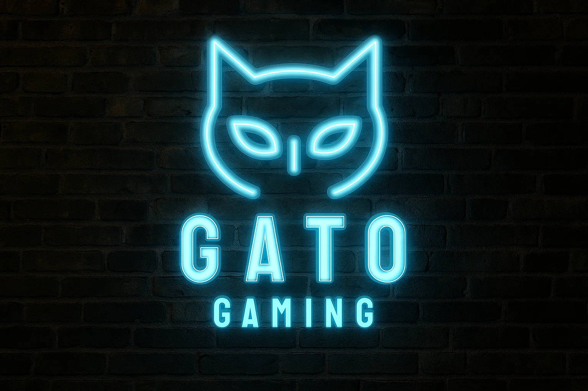
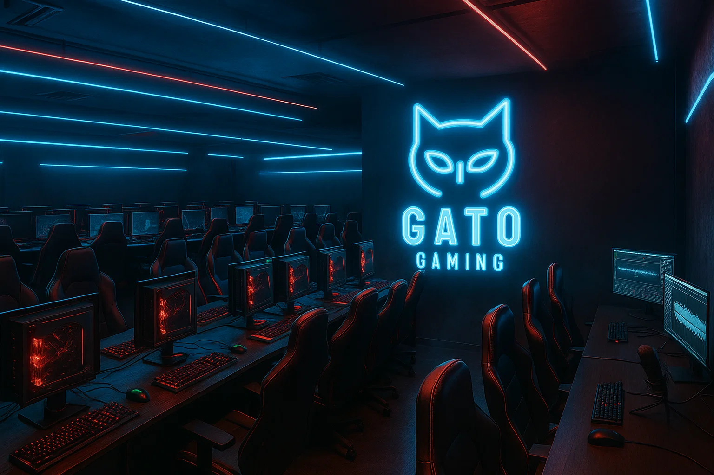

Galería visual

Explora nuestro universo visual: tecnología, luces, diseño y atmósfera
gamer como nunca la habías visto.
Setup completo de Gato Gaming: equilibrio perfecto entre potencia y diseño.
Interior iluminado con GPU RTX 4090 y refrigeración líquida NZXT.
Ambiente con luces LED personalizadas en tonos neón rojo y azul.
Identidad visual proyectada: el rugido digital toma forma.

Zona de edición y gestión de contenido: donde las ideas toman forma.